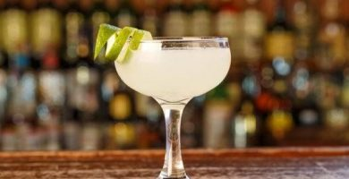
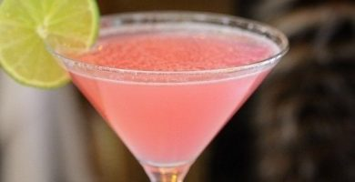
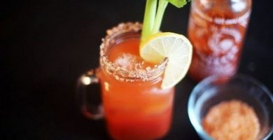
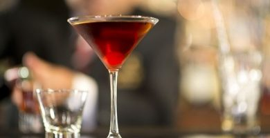
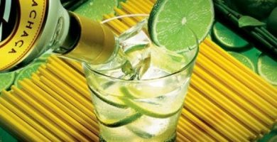
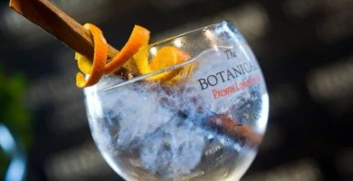
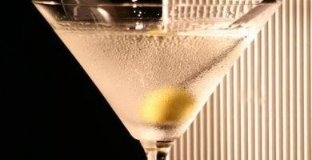

Bienvenidos a la WEB del Cócktail
e/COCKTAil surge con el objetivo que todas esas personas que han soñado alguna vez con ser un bartender de alta calidad como Tom Cruise en la película Cocktail lo puedan llegar a conseguir. El fin de esta web no es otro que ser el puntapié incial para comenzar en este maravilloso mundo de la cocktelería, donde podrás aprender las recetas de los mejores tragos, los elementos necesarios para iniciarse en esta activiad y además, conocer los trucos para que puedas preparar tus cóckteles como un barman high quality. ¡Bienvenidos!
Un poco de historia
Esto de la coctelería no es nada nuevo por muy moderno que pueda llegar a parecer. Lo que sí está claro es que el objetivo ha ido cambiado con el paso de las generaciones. Como no podía ser de otra manera podemos hablar de algo parecido a los cócteles en el siglo IV antes de Cristo, época de Alejandro Magno, Sócrates y Platón, y en la que se hacían brebajes con un objetivo sanitario. Se podría decir que es lo más alejado que podemos hablar de cócteles, unos protocócteles más cercanos a pócimas mágicas que a lo que tenemos ahora en mente que es un cóctel (aunque algo de magia sí que tienen). La palabra Cock-tail no apareció por primera vez en una publicación hasta 1798 cuando el diario The Morning Post llamó de esa manera al jengibre, como algo vulgar. No fue un inicio idílico para nuestra causa. Ocho años más tarde en el The Balance And Columbian Repository, un medio de Nueva York, ya se habló por primera vez de lo que ahora entendemos como cóctel. De hecho, el editor de la publicación, Harry Croswell, se encargaba de definirlo por primera vez: «Un cóctel es un licor estimulante, compuesto por espíritus de cualquier tipo, azúcar, agua y bíteres». Algo más bonito que pócima y jengibre y de paso involucraba el alcohol de por medio.
Los tragos mas famosos
Nuestra historia fue evolucionando hasta lo que conocemos actualmente, podemos entonces mencionar los cóckteles mas famosos del mundo en la lista que hemos preparado (siendo muy escuetos por cierto); comienza con ello en este arte de la coctelería. Prueba de hacer estos, practica y cuando lo hagas de manera que te sientas seguro y cosistente, sube tu nivel y prueba preparar algunos mas exóticos y menos conocidos para demostrar que eres un auténtico bartender :)
... Y si de historia hablamos que decir de uno de los tragos mas conocidos... Había un anuncio que explicaba una de las tantas versiones sobre el origen del Margarita y su relación con la actriz Rita Hayworth. En concreto este…
Margarita: No está tan claro que la historia fuese como la que vimos en el video ni que tuviera mucho que ver con la famosa celebridad de Hollywood. Lo que sí se sabe es que el primer Margarita se hizo en México y hay varias teorías al respecto

Mojito: Posiblemente el cóctel más popular del mundo. Originario de Cuba, esta bebida comenzó haciéndose con aguardiente, sin embargo, con la mejora de la calidad del ron cambió su alcohol. Ernest Hemingway era fan absoluto de esta bebida.

Daiquiri: La historia del Daiquiri tiene tintes de culebrón. Se inventó en Cuba por un estadounidense que trabajaba en una mina, Jennings Cox, y el nombre se lo puso un amigo suyo que era italiano, Giacomo Pagliuchi. Un bonito cóctel de nacionalidades para una de las bebidas más sabrosas del mundo.
Cosmopolitan: Sí, el cocktail de Carrie Bradshaw en "Sex in Nueva York" se ha convertido en uno de los cócteles más famosos del mundo en muy poco tiempo. Madonna y la seguídisima serie de HBO son muy responsables de la explosión de este jugo made in Nueva York.
Bloody Mary Los franceses también dominan la coctelería y el Bloody Mary es desde hace casi un siglo uno de los cócteles más conocidos de origen francés. Su nombre, dicen, se lo pusieron como referencia a Maria I de Inglaterra.
Manhattan: Sin saberse muy claramente cuándo surgió el primer Manhattan, esta mezcla con Whisky data de finales del siglo XIX obviamente en la ciudad de New York. Con el paso del tiempo ha pasado de bebida de noche a ser cada vez más un trago como aperitivo.
Piña Colada: Si te gusta la piña en la pizza, ¿por qué no te va a gustar en un cóctel? La historia de la Piña colada es bastante curiosa, cuenta la leyenda que la receta es de un pirata puertoriqueño que le daba esta mezcla con ron (como buen pirata) a su tripulación.
.jpg)
Caipirinha La bebida de Brasil por antonomasia. La Caipirinha sabe a samba, sabe a Copacabana, a alegría. Curiosamente además de ser una bebida simbólica del país sudamericano también contribuyó como remedio a principios del siglo XX para acabar con una epidemia de gripe.
Gintonic El Gin Tonic es posiblemente el cóctel más de moda de los últimos años. Su origen está ligado, como era de esperar, a la tónica y más concretamente a la Schweppes. Las tropas británicas en la India se ponían las botas con esta mezcla entre ginebra y tónica.
Dry Martini Si quieres ser Bond, James Bond, será mejor que empieces a beber Martini. Este cóctel estadounidense tiene mucha historia aparte de ser la bebida de la saga del agente secreto más conocido de la historia del cine. Entre las muchas anécdotas que rodean a esta bebida hay una genial que dice que Franklin Delano Roosevelt celebró la derogación de la Ley Seca con un lingotazo de Dry Martini. ¡A su salud!
Lo que necesitas para tener una buena coctelería casera y convertirte en un buen coctelero profesional
Abridores y Speedopeners

Destapador

Bar caddy

Bar Mat

Batidora

Cuchara tragos largos

Coctelera

Coctelera Boston

Colador de oruga

Cubetera

Cuchillo para cocktail

Vaso mezclador - Mixer

Exprimidor

Dosificador - Jigger

Pico dosificador

Sorbete

Pala para hielo

Pinza para hielo